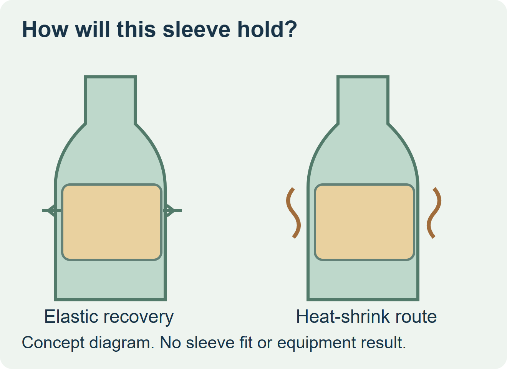
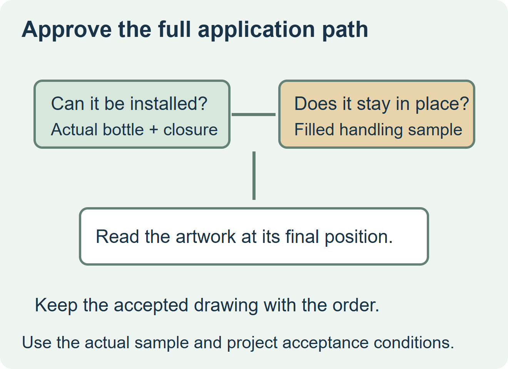

Request a stretch sleeve when the supplier can demonstrate that elastic recovery retains it at the intended position on your bottle. Request a heat-shrink sleeve when the proposed film and heat process can produce the required fit across the chosen contours. Obtain the converter’s drawing for the selected route before using an existing sleeve file.


Name how the sleeve is held in place
CCL describes stretch sleeves that expand for placement and grip through their elasticity. Its examples include beverages. That gives the buyer an alternative process to investigate alongside the heat-shrink route. Ask the actual line owner and converter to confirm which supply they support and what sample can represent the complete application. CCL stretch-sleeve explanation
| Decision field | Stretch-fit proposal | Heat-shrink proposal |
|---|---|---|
| Fit mechanism | Elastic expansion for placement and recovery on the defined bottle panel. | Controlled shrink of the selected film through the supported thermal process. |
| Drawing required | Supplier-approved flat width, cut length, material and intended applied height. | Supplier-approved flat width, cut length, seam and applied shrink profile. |
| Line question | Can the applicator expand and release the sleeve over the actual bottle features? | Can the pack follow the proposed tunnel route and produce the agreed final fit? |
| Physical approval | Location, grip, graphics and movement during normal handling. | Final contour, graphics, seam and handling after the thermal process. |


Check access and retention on the same bottle
For the elastic proposal, show the path from installation to the intended panel. A sleeve might grip the body once installed while the shoulder or closure makes installation difficult on the available equipment. Ask whether the demonstrated bottle state and installation sequence match production. Check the sleeve again when the pack is handled, chilled or squeezed where those actions are relevant.
For the heat-shrink proposal, keep the actual bottle, fill state, film and line together. Inspect the finished printed sleeve after the agreed process. The converter should prepare the artwork for that construction and applied geometry. A sleeve drawing approved for one material does not establish the dimensions or graphic compensation for the other route.
Give the sample an explicit job
In a hypothetical bottled-drink comparison, the brand wants the same body panel across two bottle sizes. Obtain an identified sample for each size and observe whether the printed field stays at its accepted height through handling. If one route cannot retain the field, ask the supplier to propose another supported outline or application method before committing to printed stock. Keep critical text and any closure function in the review.
Compare costs for the accepted decorated pack. Include printed supply, sample preparation, setup, the proposed application process, usable pieces and version-specific stock. A different installation route can add parts or handling even when the graphics look similar. Ask which sleeve options can actually be supplied for the project.
Discuss the unresolved label requirement
Send the exact bottle and filled samples, target coverage and viewing panels, line model, permitted process, service route and quantity by artwork. Review beverage label options and prepare a label specification inquiry. The contact page opens an email draft and lists email or WhatsApp for attachments. Supply, proof options, testing, pricing and timing require project confirmation.